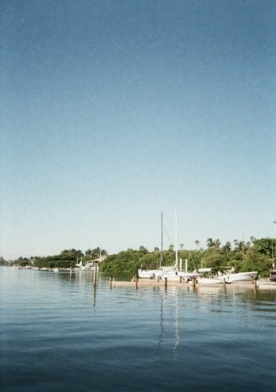
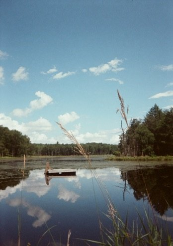
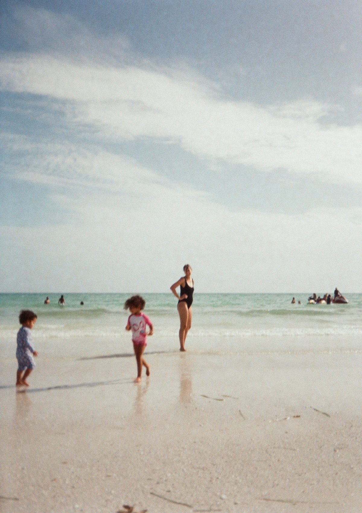
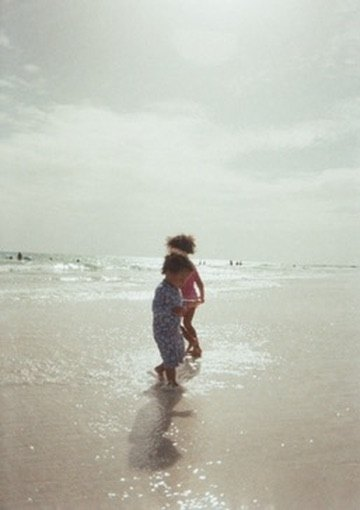
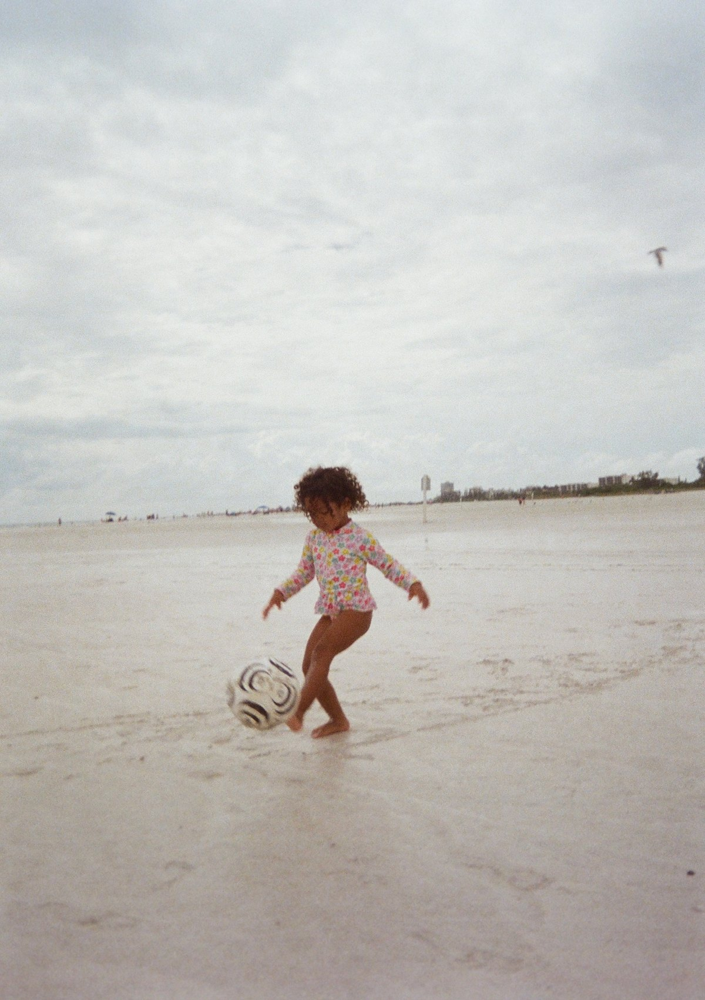
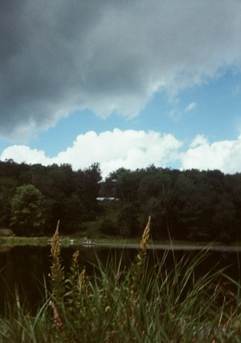
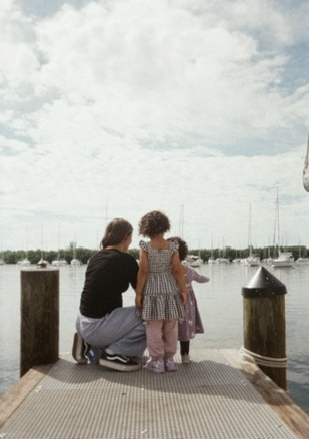
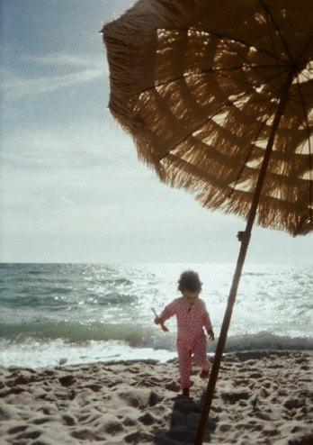
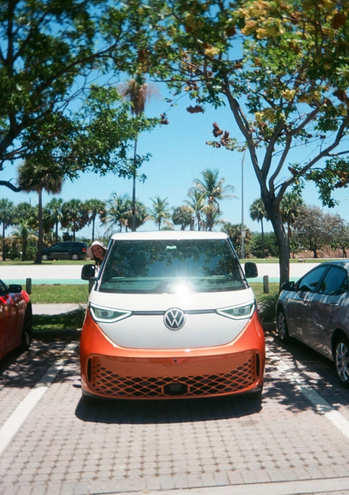

A hobby of mine
Videography & Photography

Why Film?
Filmmaking has always been my creative outlet. Long before Joolep, I had a deep love for film. The way it can capture mood, place, and human connection in ways words never could. For me, videography is about telling stories with intention, whether it’s shining a light on local food systems or reflecting on the realities of everyday life.
My style leans toward authenticity—natural light, minimal staging, and an emphasis on emotion. I want viewers to feel like they’re stepping into the moment, not watching from the outside.
Works
Not Just Food: The Impact of Your Food Choices
This video talks about the real cost of “cheap” food. I made it to get people thinking about where their food comes from, the impact it has on local communities, and why supporting local businesses matters. I kept the visuals and pacing simple so the focus stays on the message.
“So here’s your choice, cheap food that takes everything, or real food that builds everything?”
Parenting Is... | An Honest Reflection on Parenthood
This is a personal video where I share my own experience with the challenges and rewards of parenting. I talk about how it can be exhausting and overwhelming, but also full of meaning. My goal was to be open and relatable for other parents who might feel the same way.
“Parenting is love, stronger than you ever imagined...”
Why film photography?
I am always shooting film photography. I love the rawness and the grit of film, and the wait: you never know how a roll turned out until it is developed. Here are a few frames.









Open to opportunities
Slow down. Look closer.
I like slow content, the opposite of a feed you scroll past. Film, video and design that reward you for paying attention. If that is the kind of work you need, let’s talk.